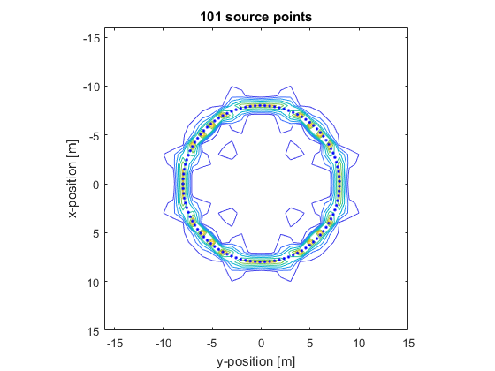

offGridPoints
Create a non-binary source mask from Cartesian points.
Syntax
mask = offGridPoints(kgrid, p, scale)
Description
offGridPoints creates a non-binary source mask using BLIs centered on a given set of Cartesian points.
Examples
% create grid Nx = 32; Ny = Nx; dx = 1; dy = dx; kgrid = kWaveGrid(Nx, dx, Ny, dy); % create circle and plot points radius = 8; circumference = 2*pi*radius; desired_scale = 2; num_points = round(circumference/dx * desired_scale); actual_scale = num_points * dx/circumference; center_pos = [0, 0]; arc_angle = 2*pi; plot_circle = true; circle = makeCartCircle(radius, num_points, center_pos, arc_angle, plot_circle); title(sprintf('%d source points', num_points)) mask = offGridPoints(kgrid, circle, actual_scale); % add mask extent to plot hold on v = linspace(0, max(abs(mask(:))), 10); contour(kgrid.y_vec, kgrid.x_vec, abs(mask), v); set(gca, 'children', flipud(get(gca, 'children'))) % reverse plot order
Inputs
kgrid |
k-space grid structure returned by makeGrid containing Cartesian and k-space grid fields |
points |
num_dims x num_points array of Cartesian coordinates |
scale |
scaling factor accounting for density of source points relative to the density of kgrid nodes |
Outputs
mask |
Non-binary source mask |
See Also
offGridArc, offGridBowl, offGridDisc, offGridLine